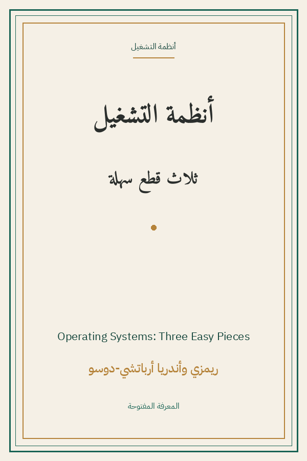

Operating Systems: Three Easy Pieces
أنظمة التشغيل: ثلاث قطع سهلة
البرمجة والتقنية
CC BY-NC
ترجمة كاملة
أنظمة التشغيل: ثلاث قطع سهلة — الأستاذان أرباتشي-دوسو من ويسكونسن: المحاكاة الافتراضية للمعالج (العمليات والجدولة)، الذاكرة (العناوين والصفحات)، والتزامن (الخيوط والأقفال)، والثبات (الملفات وRAID)، بأسلوب حواري فريد وتمارين مقررة جامعية.
| المؤلف | ريمزي أرباتشي-دوسو وأندريا أرباتشي-دوسو — Remzi H. Arpaci-Dusseau & Andrea C. Arpaci-Dusseau |
| سنة النص الأصلي | ٢٠١٨ |
| كلمات المصدر (الإنجليزية) | ٢٩٧٧١٢ |
| كلمات الترجمة (العربية) | ٢٤٤٧١٤ |
| مقاطع الترجمة المدققة | ٢١٤ |
| مدة القراءة التقريبية | ≈ ٥٥٦٠ دقيقة |
الترخيص والحقوق: رخصة المشاع الإبداعي: النسبة-غير تجاري 4.0 (pages.cs.wisc.edu/~remzi/OSTEP).